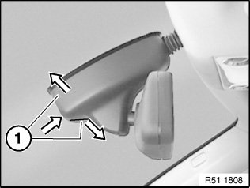
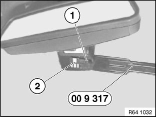
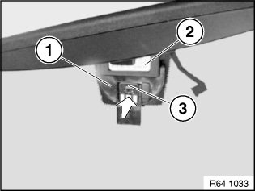

Fogging Sensor: Service and Repair
64 11 970 Replacing Fogging Sensor
Special tools required:

WARNING: Make sure rooms are well ventilated when working with adhesive remover indoors.

IMPORTANT: Do not under any circumstances use paint thinner to clean the bonding surface.

Expand two-part mirror base cover (1) by pressing from below and detach.
Feed out two-part mirror base cover (1) and remove.

Disconnect plug connection (1).
NOTE: If necessary, carefully heat fogging sensor (2) with a hot air blower to approx. 40-60 °C.
Lift off fogging sensor (2) with special tool 00 9 317 and slowly pull off from windshield.
Installation:
Bonding surface must be dry and free of dust and grease.
Clean bonding surface with adhesive remover (sourcing reference: BMW Parts Service).
After cleaning, do not touch bonding surface with bare hands.

Pull off protective film completely from fogging sensor (3).
Place mounting template (1) as pictured on rain sensor (2).
Press fogging sensor (3) in direction of arrow with a contact pressure of ≥15 N/cm2 onto inside of windshield.
NOTE: Firm thumb pressure attains approx. 30 N/cm2.
Remove mounting template (1) carefully from fogging sensor (3).